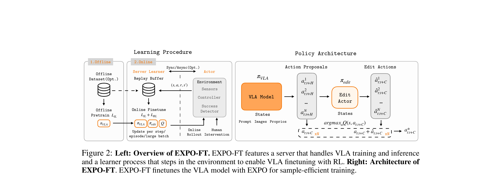

EXPO-FT: Sample-Efficient Reinforcement Learning Finetuning for Vision-Language-Action Models
Dong 等 · 2026 · arXiv:2605.25477 · Zotero 92GN8NUH
EXPO-FT 把 VLA 推理、真机采样和训练组织成可快速回滚的在线系统，让预训练先验真正转化成分钟级 RL 微调。
§1 Introduction：为什么预训练 VLA 的在线 RL 仍然常常不收敛
预训练 VLA 已经能在新任务上偶尔成功，但少量 zero-shot 成功并不会自动变成可靠策略。直接全参在线 RL 面临三重成本：大模型推理拖慢采样，稀疏成功奖励让探索效率低，真机 reset 与安全干预占去大部分 wall time。许多论文只报告环境 step，却忽略训练、推理和人工操作组成的真实数据闭环。
EXPO-FT 把问题当作系统—算法协同：先用少量 demonstration 或 VLA 自身成功轨迹初始化，在线阶段用 Q-guided action chunk sampling 从预训练生成分布中寻找高价值候选；人类可编辑或纠正动作，异步训练/推理服务持续发布可回滚版本。目标是在不抛弃 VLA 先验的前提下，用平均约 19–20 分钟在线机器人数据完成任务适配。
展开原文 · 系统目标
“finetuning pretrained robotic policies with reinforcement learning ... efficient and reliable”
§2 Related Work：EXPO、真实机器人 RL 与 VLA 后训练
真实机器人 RL 已用 replay、演示初始化、预训练视觉和人类干预降低样本量；HIL-SERL 证明人类纠正能把探索集中到失败状态。VLA RL 又多了生成式 action chunk 和昂贵 encoder，传统 actor-critic 不能直接高频共享前向。
EXPO-FT 扩展 Q-guided generative policy optimization，使候选采样适配 VLA action chunk，并把 reward detector、human editing、actor/critic server 和机器人采样解耦。它的贡献一半是策略改进，一半是把“20 分钟数据”真正转换为可重复运行的工程流程；比较时必须同时对齐真实交互时间与算力并发。
§3 问题设定：SFT 到底漏掉了什么
VLA 预训练与 SFT 解决“从观测到动作的模仿”，但部署是闭环过程：动作会改变下一帧，错误会把策略带到演示没有覆盖的状态。从零训练 RL 太慢，而直接全量微调 VLA 又容易不稳定；部署需要在很少真机交互下把成功率补到可用水平。
策略是预训练 VLA，训练系统把动作 chunk、环境状态、成功信号与人类 correction 写入 replay buffer。
展开原文 · 核心主张
“perfect task performance across all evaluated tasks within an average of 19.1 minutes”
§4 方法总览：反馈信号怎么走
上一节明确了状态、动作与反馈，现在沿论文原图追踪训练信号。重点不是背模块名，而是判断：哪部分保持预训练先验，哪部分真的被 RL 改写。

1. 从预训练 VLA 与少量任务数据开始
预训练 VLA 与少量任务示范先提供能偶尔成功的初始策略。系统同时配置自动成功检测和 replay；没有这个可工作的起点，真机在线探索会把大部分时间花在无意义动作与复位上。
输入是什么：已经采集的专家演示、机器人交互轨迹或评测样本。每条数据通常包含观测、动作，以及可能存在的奖励或下一状态。
这一步究竟做什么：预训练 VLA 与少量任务示范先提供能偶尔成功的初始策略。系统同时配置自动成功检测和 replay；没有这个可工作的起点，真机在线探索会把大部分时间花在无意义动作与复位上。
输出到哪里：参数得到更新的模型，或能供下一轮训练使用的新监督信号。这个结果会交给下一步“训练/推理服务器持续发布策略版本”继续处理。
为什么不能省略：前面的数据或分数本身不会自动改变模型；必须通过损失函数把误差信号变成参数更新。
2. 训练/推理服务器持续发布策略版本
训练服务异步消费 replay，推理服务则持有可回滚的策略版本。二者解耦后，机器人不用等待每次梯度更新；版本号又能追踪一条轨迹究竟由哪个策略产生，避免训练数据错配。
输入是什么：来自上一步“从预训练 VLA 与少量任务数据开始”的产物：参数得到更新的模型，或能供下一轮训练使用的新监督信号。本步骤还会按论文设置读取当前条件、时间步或训练信号。
这一步究竟做什么：训练服务异步消费 replay，推理服务则持有可回滚的策略版本。二者解耦后，机器人不用等待每次梯度更新；版本号又能追踪一条轨迹究竟由哪个策略产生，避免训练数据错配。
输出到哪里：参数得到更新的模型，或能供下一轮训练使用的新监督信号。这个结果会交给下一步“Q 引导采样与人工编辑提升有效探索”继续处理。
为什么不能省略：前面的数据或分数本身不会自动改变模型；必须通过损失函数把误差信号变成参数更新。
3. Q 引导采样与人工编辑提升有效探索
执行时从生成式策略采样多个 action chunk，critic 对候选排序；必要时操作者直接编辑动作。Q 引导提高自主有效样本比例，人工编辑则集中覆盖高风险或 critic 尚不可靠的状态。
输入是什么：来自上一步“训练/推理服务器持续发布策略版本”的产物：参数得到更新的模型，或能供下一轮训练使用的新监督信号。本步骤还会按论文设置读取当前条件、时间步或训练信号。
这一步究竟做什么：执行时从生成式策略采样多个 action chunk，critic 对候选排序；必要时操作者直接编辑动作。Q 引导提高自主有效样本比例，人工编辑则集中覆盖高风险或 critic 尚不可靠的状态。
输出到哪里：一个或多个候选未来、动作或轨迹，以及必要的中间状态。这个结果会交给下一步“用在线成功信号迭代动作块”继续处理。
为什么不能省略：只有生成候选而没有评价标准，模型不知道哪个结果更好；这一步把‘好坏’变成可比较的学习信号。
4. 用在线成功信号迭代动作块
成功、失败和编辑轨迹回到 replay 后，以高 update-to-data ratio 反复训练动作模块。每轮发布前做固定任务回归并保留旧版本，所以‘19 分钟数据’不等于只训练 19 分钟，而是充分复用这段真实交互。
输入是什么：来自上一步“Q 引导采样与人工编辑提升有效探索”的产物：一个或多个候选未来、动作或轨迹，以及必要的中间状态。本步骤还会按论文设置读取当前条件、时间步或训练信号。
这一步究竟做什么：成功、失败和编辑轨迹回到 replay 后，以高 update-to-data ratio 反复训练动作模块。每轮发布前做固定任务回归并保留旧版本，所以‘19 分钟数据’不等于只训练 19 分钟，而是充分复用这段真实交互。
输出到哪里：经过本步骤处理、含义更明确的中间结果。这是图中这条链路的最终产物，随后会进入真实执行、模型更新或指标评测。
为什么不能省略：它把前面得到的内部结果落实为可执行动作、可训练模型或可解释指标，完成从方法到结果的最后一步。
§5 机制细拆：动作、价值与更新边界
上图给出了宏观流程，但真正决定训练是否稳定的是三个接口：动作以什么粒度出现、反馈怎样变成可学习信号、哪些参数允许被更新。
§6 目标函数：把直觉压缩成可检查的量
前一节说清了信号路径，这里把核心优化目标写成教学化公式。读公式时依次检查：回报影响谁、数据支持在哪里、预训练策略受到什么约束。
- $r_t$
- 真机任务反馈
- $\gamma$
- 长程回报折扣
- $\pi_\theta$
- 待微调 VLA 策略
训练服务器与推理服务器解耦，异步更新动作模块并持续发布策略；高 update-to-data ratio 充分利用每分钟真机数据。
§7 训练与评测：数字是在什么条件下得到的
只看最终成功率会隐藏数据预算、仿真/真机差异和基座强弱。本节把论文的实验对象与比较关系放回同一张表。
| 策略与动作 | 策略是预训练 VLA，训练系统把动作 chunk、环境状态、成功信号与人类 correction 写入 replay buffer。 |
|---|---|
| 训练反馈 | 稀疏任务成功提供主奖励，Q 函数帮助筛选高价值动作；需要时由人工编辑动作，减少真机无效探索。 |
| 更新方式 | 训练服务器与推理服务器解耦，异步更新动作模块并持续发布策略；高 update-to-data ratio 充分利用每分钟真机数据。 |
| 实验覆盖 | 包含 8 个高精度或动态真机任务，如插花、插头通电、台球入袋与灯串布线；每个任务以 30 次独立评测检查可靠性。 |
| 关键对照 | 区别于 RL-from-scratch，它把 VLA 先验视为强行为分布；区别于全参 VLA RL，它把稳定系统和样本复用放在首位。 |
§8 结果怎么读：证据、因果与可迁移结论
在插花、走线、台球等任务上，论文报告平均 19.1 分钟在线数据达到每项 30/30 成功。
区别于 RL-from-scratch，它把 VLA 先验视为强行为分布；区别于全参 VLA RL，它把稳定系统和样本复用放在首位。
EXPO-FT 的贡献一半是算法，一半是数据面与训练面解耦的系统设计。
§9 复现与工程检查
前一节判断了证据强度，复现时还要把训练信号对齐、时间尺度和数据统计逐项落地，否则“同名算法”也可能得到完全不同的结果。
- 必须记录真实机器人分钟数而非仅梯度步数；成功检测、复位和人工 correction 协议要公开；策略发布应支持回滚。
- 先跑通不加 RL 的预训练/SFT 基线，并保存逐任务成功率与失败视频。
- 同时记录环境步数、真实墙钟时间、人工介入次数、更新次数和推理延迟。
- 把奖励、终止、action chunk mask 与归一化统计做成可视化单元测试。
§10 适用边界与研究启发
样本效率依赖任务复位、成功判定和系统并发设计；不能只看算法损失而忽略整套工程。
EXPO-FT 的贡献一半是算法，一半是数据面与训练面解耦的系统设计。